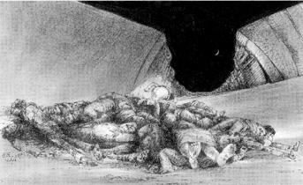

PALESTINIAN ARTIST: Adnan Yahya
A Review of the exhibition: From Sabra and Shatila.. to Indpendence?
May, 1999, by Samia A. HalabyThe May 1999 show at Darat Al-Funun in Jordan is made up of sets of graphic works and paintings. The images are variations on the theme of tyranny and oppression. In one set of nineteen ink drawings, we see heaps of massacred humanity. At each heap there is a small event which crowns the horror. For example a figure in screaming anguish, or a woman holding a baby and gesturing for help, or an old man pulling a dead youth out of the heap, or a youth pulling an old man, or two children walking away, or a face staring out of the pile at the crescent moon is the event dramatized by the background of horror.

In one of them an oversized truck runs over the mass of dead bodies as took place in the massacre at Sabra and Shatila camps. Hanging at one end of the set is one work which is most powerful. In it two old women, etched like African sculptures in a Picasso-like manner, stand with faces of wild tigers and arms dangling helplessly over a heap of dead. Over this entire scene is a set of thick heavily entwined roots with nasty fingers probing the dead to suck their juices.
In Yahya�s work there is no nobility. These are not specific pictures of particular events. Rather, these paintings are expressions of an idea of tyranny. To create this, Yahya standardized his forms and indulged in a detailed illusion of distortion, disintegration, and decay.
Most of the paintings are in grays with color reserved for blood and floral offerings. In these paintings, the martyred dead lie heavily on the backs of the pathetic crowd. Two notable sets of paintings enhance the show, One is of faces in pain and the other is of faces of Tyrants in decay. Yahya creates an illusion of the mucky color and texture which articulate the giant heads of tyrants. His skill is apparent in the totally visual differentiation between the loathsome faces of the tyrants and the painful expression in the heads of victims.
At first one is frightened at the depressing truth that seems to be revealed. An aimless pathetic existence intermingled with depression and defeat. Those who find the fright unbearable will replace it with anger, which then they probably will direct at the artist. Others might accept that this is one face of the current state of retreat in the Arab World and courageously continue their inspection.
It is justified to wonder if this is painting at the leading edge. The questions to be asked are those of how we see society and not of how we understand avant-garde painting. These are painting of social commentary. Yahya allows us to decide the precise parameters of who the tyrant is and who the oppressed.
There are but a few symbols of a national nature to identify the characters. But the allusions are clearly to the Arab World and there is no mistaking the oppression of Palestinians by Israelis in this work. We see a consistently depressing scene with only a whimper of resistance. The rich heroism of the Palestinian refugee camp is absent. Only the pain of life of those who suffer is presented.
Thus, the work is narrowly focussed in attitude and content. The graphic work is in all respects more successful than the painting. Both rely on the history of painting of social commentary. To his credit, Yahya seems to be aware of the historical currents in social realism. Many such allusions to this history are visible in his work including particularly the work of Heironymus Bosch, Francisco Goya, and Kathe Kollwitz. His references and his expressive ambitions are international.
CLICK HERE to make comments.
� Copyright, Samia A. Halaby, 1998, All rights reserved. To request permission to reproduce any part of these words or pictures CLICK HERE.
Select from the following menu representing the entire studio:
HOME IN PALESTINE PART I - A Visual Diary. My Grandmother... The Town of Beisan... The Arab City of Jerusalem... Sabah Told Me... My Home in Yafa... Khader Told Me... Olives of Palestine... Our Students... A Taxi Ride in Bethlehem... Written by Doctor Fathiye Saudi... Hasan Told Me... A Visit to Kafr Qasem... The artist of Kafr Qasem... The Massacre at Kafr Qasem (not yet ready)HOME IN PALESTINE PART II - On Palestinian Artists Rana Bishara, painter, intallation artist... Tayseer Barakat, painter... Sari Khouri, painter... Abdel Tamam, painter... Vera Tamari, ceramist and painter... Adnan Yahya, painter and graphic artists...Return to the very beginning FRONT PAGE of the studio A MENU of the entire studio
{kind=link}
{kind=link}
{kind=link}